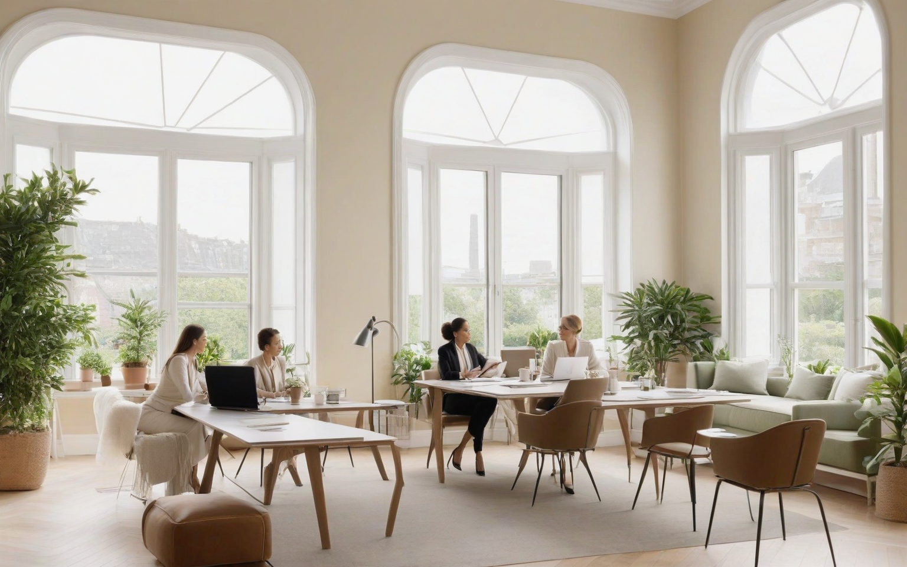
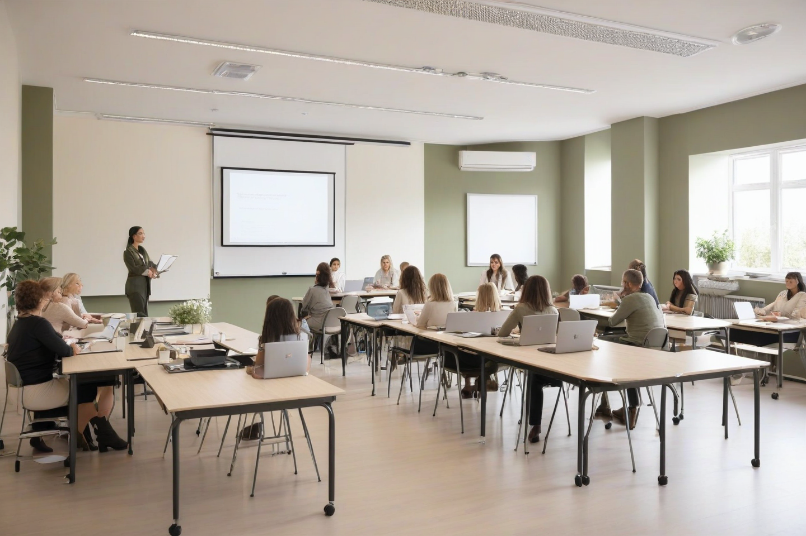

2021
rok rejestracji
Premium NGO Website
Strona prezentuje publicznie dostępne informacje o fundacji oraz jej profilu działań: edukacyjnym, badawczym i społecznym. Projekt łączy zaufanie, czytelność i estetykę premium.

2021
rok rejestracji
Zielona Góra
siedziba fundacji
3
publicznie widoczne obszary aktywności
O nas
Instytut Badawczo-Edukacyjny Meritum to fundacja z siedzibą w Zielonej Górze. Publicznie dostępne wzmianki wskazują na zaangażowanie organizacji w działania edukacyjne, społeczne oraz inicjatywy oparte na diagnozie potrzeb lokalnych społeczności.
Wizerunek tej strony łączy wiarygodność instytucji, nowoczesną komunikację i estetykę premium — przydatną zarówno w prezentacji partnerom i grantodawcom, jak i odbiorcom działań fundacji.
Obszary działań

Inicjatywy edukacyjne, działania rozwojowe i wsparcie kompetencji dla różnych grup wiekowych.
Mapowanie potrzeb społecznych i praca projektowa oparta na analizie lokalnych wyzwań.
Budowanie zaangażowania społecznego poprzez projekty wolontariackie i współpracę z otoczeniem.
Dlaczego warto zaufać
Kamienie milowe
2021
Rozpoczęcie działalności jako Instytut Badawczo-Edukacyjny Meritum w Zielonej Górze.
2024/2025
Organizacja pojawia się publicznie przy projekcie dotyczącym mapowania potrzeb społecznych w województwie lubuskim.
2026
Widoczna publicznie oferta realizacji zadania „Wolontariat akademicki”.
Kontakt
Sekcja kontaktowa oparta na publicznie dostępnych danych rejestrowych. W kolejnym etapie można ją rozbudować o formularz, mapę, adres e-mail, numer telefonu i profile społecznościowe.
Napisz do fundacji